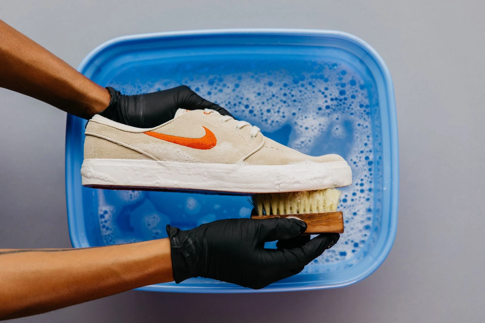
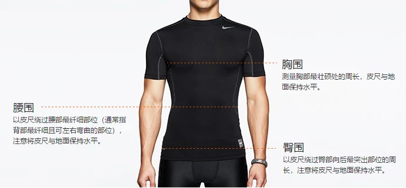

配送相关的问题
退货与换货
产品信息
▼
如何清洁 Nike 运动鞋、服装或装备？
为确保运动鞋可以长期发挥出众性能，建议您对其进行妥善保养和维护，包括清洁。只要进行以下几个简单的清洁步骤，就能让运动鞋常保如新：
我们不建议将鞋子丢入洗衣机或烘干机，或者使用刺激性较强的清洁产品，例如漂白剂。运动鞋一脏就立即清洁，可获得最佳清洁效果。待运动鞋全干，系好鞋带，就能焕然一新重新登场。
▼
什么是耐克尺码对照表？
第 1 步：
测量尺寸
第 2 步：
确定尺码
使用下表对照个人测量数据来确定自己的尺码。如果您的尺寸介于两个尺码的分界线上，则尺码较小的穿起来较贴身，而尺码较大的穿起来较宽松。如果您的胸围和腰围测量尺寸分别对应两个不同的建议尺码，则应以胸围尺寸为准。

▼
什么是 Nike By You 的个性化定制政策？
大部分 Nike By You 运动鞋可添加个性签名，让专属信息彰显您的个性化风采。
在 Nike.com 上定制运动鞋时，如果您的个性签名被拒绝，请重新输入新的个性签名，以完成您的设计。如果您的个性签名违反指南要求，或者内容不当，将遭到拒绝。
个性签名指南
长度和字符要求将在定制过程中自动显示在屏幕上（例如，3 个大写字母和/或数字字符）。长度和字符选项因运动鞋款号而异，并不是所有语言或特殊字符均受支持。
您的个性签名若包含下列內容将会遭到拒绝：
对于提交的任何个性签名，我们保留拒绝的权利。
还有疑问？请与我们联系。我们乐意随时为您效劳。
▼
购买特别版运动鞋有哪些小贴士？
NIKE在线上一般会通过 SNKRS 应用程序发布特别版运动鞋，这些运动鞋包括经典重塑设计和最新款以及创意款等。其中的大部分运动鞋为限量发布，很快便会售罄，如果您心仪某款运动鞋，可参考以下小贴士来提高买到的概率。
新品发布前：提前做好准备
临近新品上市：进一步做好准备
购买阶段：在供货时间做好准备抢购
禁止代购销售
本平台着眼于向终端消费者提供需要的耐克产品，因此不允许代购销售。代购是指出于商业目的，您的主要或者重要的业务通过购买耐克的商品并将其转售给终端消费者的行为。如果耐克发现您有代购销售行为，将不再允许此帐户购买商品，并有可能永久地关闭您在耐克的该帐户。
禁止不公平购买
Nike致力于营造公平公正的新品发布环境。所以我们不允许以任何方式做出的不公平购买行为。如果订单被发现有上述行为，该订单有可能会被拒绝或取消。了解更多详情，请点击查看 Nike.com 使用条款，该条款适用于 Nike.com、SNKRS应用程序其他 Nike 产品和服务。